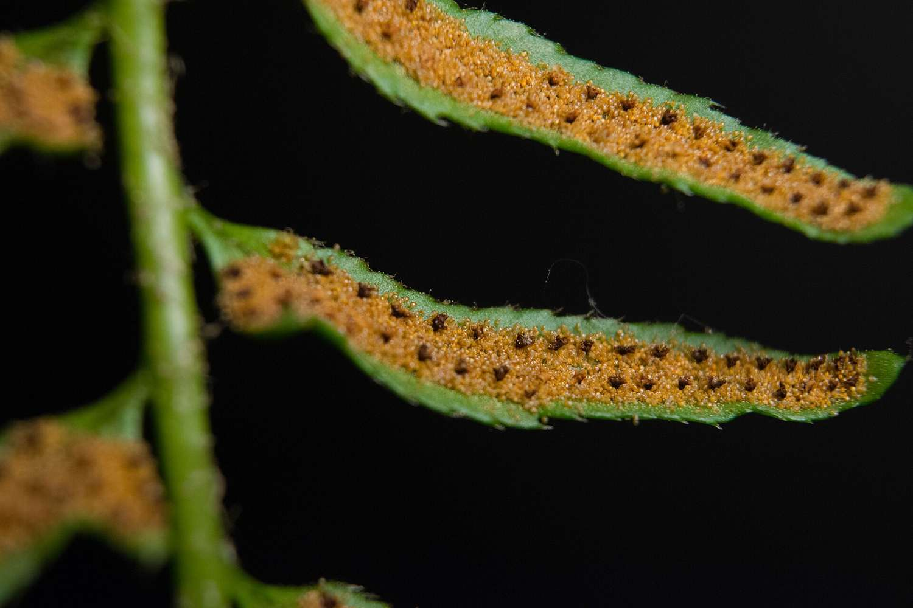
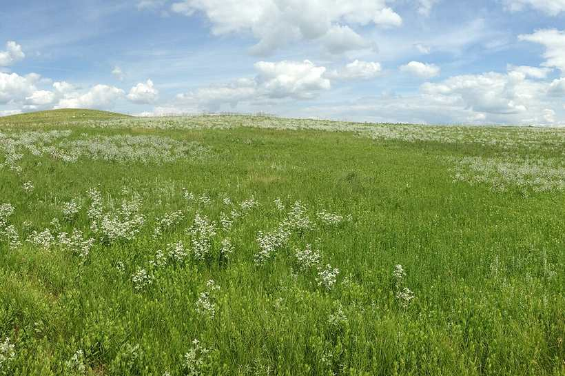
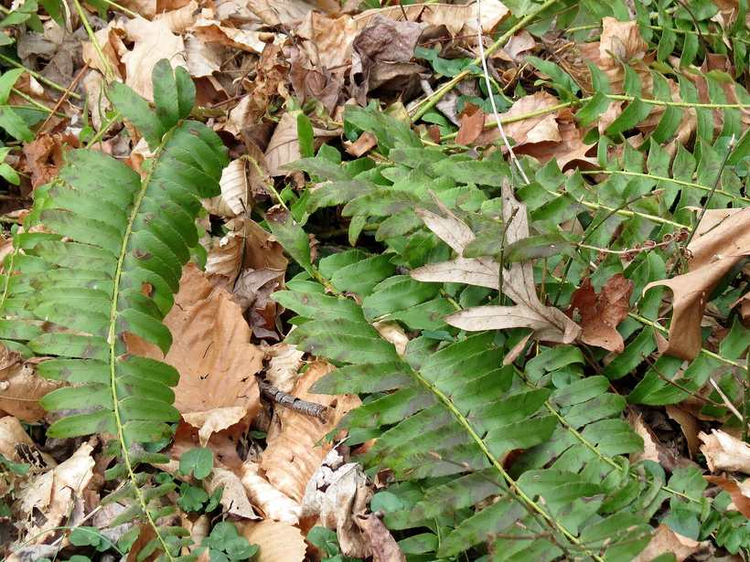
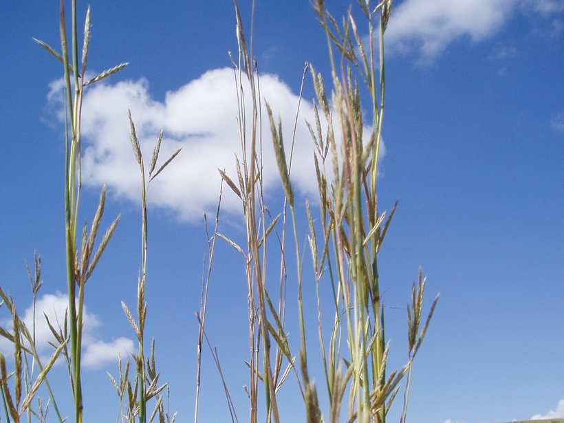
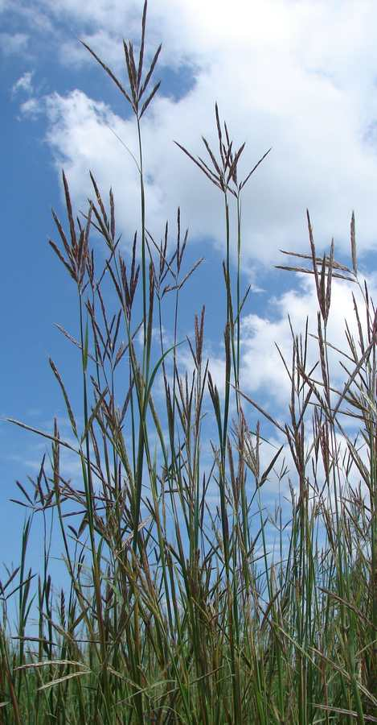
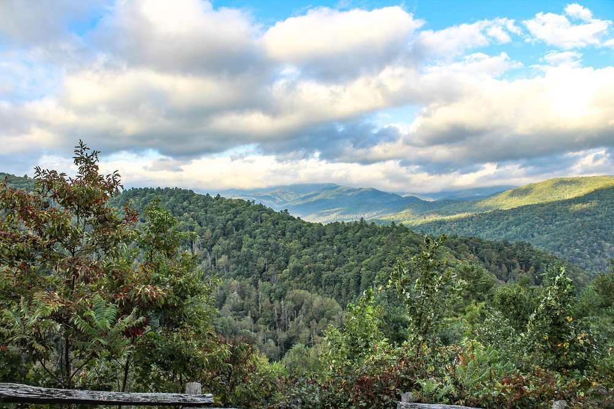
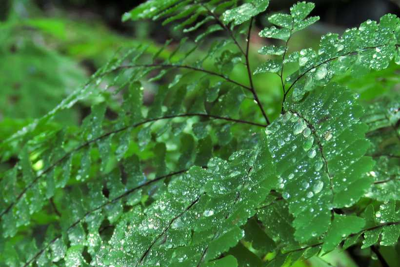
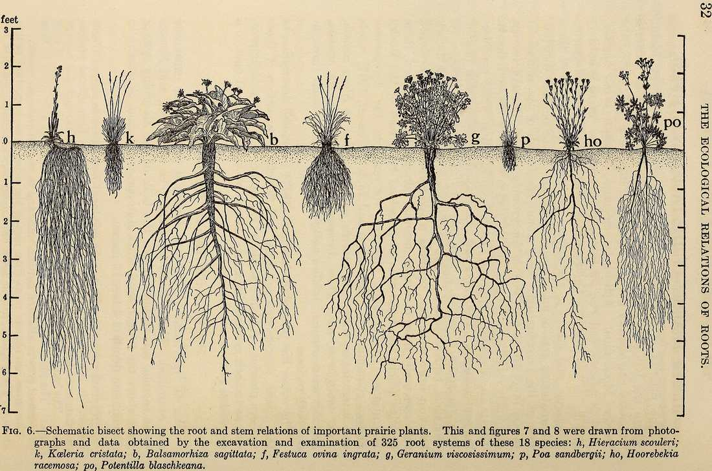
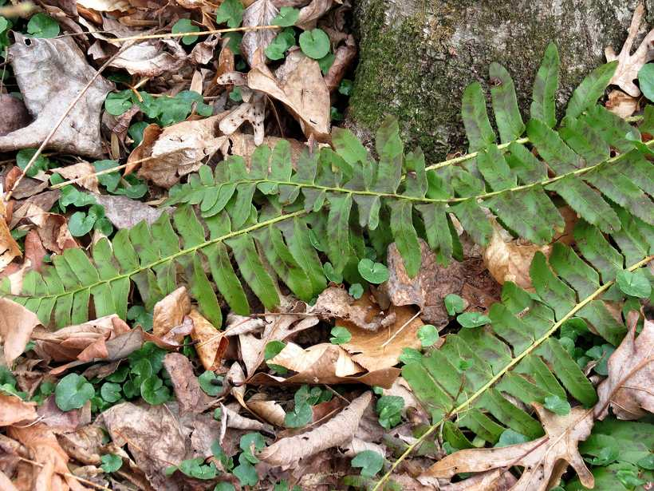

Scene 1Warm-Up
▶ Start hereHow your Wonder Films lessons work1-minute videoOpen ▾
🎯 TodayI can…
- compare plant traits in two different environments.
- explain how a plant trait helps it survive a specific challenge.
- use evidence to explain why a trait gives a survival advantage.

🔎 Mystery specimenWhat can one leaf show you?
What to do: Press Inspect specimen. Move the magnifying lens over the plant, then tap 3 things you notice.

📚 Word WallWords scientists use
What to do: Tap or click each card to flip it and read what the word means. Tap 🔊 to hear the word.
Scene 2The Lesson
🌲 Part 1Two Very Different Homes
A mountain forest and an open grassland are very different places to live. In a forest, tall trees block much of the sunlight. The soil is rocky and stays damp. It can get very cold.
Out in a grassland, sunlight is everywhere. Wind blows steadily. Rain comes and goes, and the soil can dry out for weeks.
🎞️ Put the scenes in orderHow does a prairie come back after a fire?
What to do: Drag each photo into the film strip, from first to last. You can also tap a photo, then tap a frame. Get the order right and your strip becomes a movie.

Look at scene 3 again. The prairie is black. Is the grass dead?
🍃 Part 2Traits Are Solutions
A fern on the shady forest floor has wide, flat fronds. Those broad leaves catch every bit of light that filters through the trees. That trait is a solution to the problem of shade.
A prairie grass has thin, tough leaves and roots that go deep, sometimes deeper than you are tall. That root system is a solution to dry seasons. It can reach water far underground when the surface dries out.
💨 The Wind LabWhich leaf shape handles the wind?
What to do: Follow the steps one at a time. You will pick, test, and then explain.



⭐ Part 3The Right Trait for the Right Place
A trait gives an advantage when it solves a problem in that specific place. Deep roots are an advantage in a dry grassland. They are far less useful in a wet forest, where water is already near the surface.
Plants with traits that fit their place survive and make seeds or spores. Plants without them often don't.
🌳 The forest elevatorDrop from the treetops to the forest floor
What to do: First, make a prediction. Then brush the glowing layer: drag across it (or tap it again and again) until the plant shows.
As you go down from the treetops to the forest floor, will there be more light, or less?


Level 4In a forest, each level gets less light than the one above it. The plants at each level have traits that fit how much light reaches them.
A sunflower loves bright, open sun. Would it grow well on the forest floor, next to the fern?
A prairie's hidden half

Scientist John Weaver spent years digging up prairie plants, root and all. He found that most of a prairie is hidden underground.
Scientists have measured switchgrass roots, a prairie grass, 8 to 11 feet deep. That's about as deep as a basketball hoop is high!
🗂️ Part 4Compare Plant Adaptations
What to do: Pick 3 cards, one at a time. Tap a clue you see, then pick what it is. Predict where it grows, and watch its home appear.
| Plant | What I observe | The trait | Its home | My evidence |
|---|
🌍 Rebuild the plant's homeUse your evidence to rebuild the plant's home OPTIONALOpen ▾
What to do: Pick one you solved. Pick the place it points to, then pick the living things that belong there.
Pick one from your chart and explain it.
Start with: "Plant __ has…"
Scene 3Self-Check
A fern on the forest floor has very wide, flat leaves. Why is this trait a useful adaptation?
Grassland grasses often grow very deep roots. What challenge does this help them survive?
Which of these is the best example of a survival advantage?
Scene 4Assignment
🔍 Part ALabel and identify
What to do: Read each one. Pick the best answer, or type your answer.
1. Pick one forest plant from your evidence chart. Name one of its traits and describe what it looks like.
2. Pick one grassland plant from your evidence chart. Name one of its traits and describe what it looks like.
3. Which environment has more direct sunlight?
4. How does a plant trait match that difference in sunlight?
🚀 Part BShort answer
What to do: Answer in complete sentences. Use your science words.
1. How does one trait from your forest plant help it survive the shady, rocky forest? Use the word adaptation in your answer.
2. How does one trait from your grassland plant help it survive dry seasons or open wind? Use the word advantage in your answer.
✍️ Write and explainWalk through your thinking
What to do: Answer the three questions. Use at least one of the science words under the boxes.
Start with: "I think the fern would struggle because…"
Start with: "In my investigation, I noticed that…"
Start with: "This makes sense because a trait only gives an advantage when…"
🎨 Part CDraw and label
What to do: Draw your forest plant and grassland plant side by side. Under each one, write its biggest survival advantage.
🎬 Your question from Scene 1Can you answer it now?
What do you still wonder about? Write your question here. Then answer it.
📋 My answersEverything you wrote, in one place
(Your answers show up here as you write.)
How to turn in: Copy your answers and paste them into the Canvas assignment. Or download the file and upload it. Then press Save my drawing in Part C and upload your drawing too.
✅ Checklist
What to do: Tap each item when it is done. Items you finish on the page check themselves.
- My evidence chart has 3 plants and my explanation.
- Part A: all four answers.
- Part B: questions 1 and 2.
- Part C: my drawing and both labels.
- Write and explain, with at least one science word.
🎬 Premiere my plant storyYour exhibit
What to do: Check your exhibit. Pick the one you wrote about, add your first name, then press Premiere film.
I observed…
I think it was…
My evidence…
It tells us…
🎞️ This film's frames
Roots survived
The Wind Lab
The forest elevator

Plant detectives
Earn all four frames in the Lesson, then finish the checklist.
🔜 Coming up next19.01 · How Do Plants Make Food?
Next time, you'll find out how a plant turns sunlight, water, and air into its own food.
Photo and music credits
- This native of the mixed, Sandhills, and tallgrass prairie can reach a height…, NPS Photo, Public domain
- Poplar Stands at Low Gap (Mile 8) (22010390022), ShenandoahNPS, Public domain
- Big Bluestem (7449929196), USFWS Mountain-Prairie, Public domain
- Wild Boston fern, Noles1984 at English Wikipedia, CC BY-SA 3.0
- Christmas Fern (32288913494), Katja Schulz from Washington, D. C., USA, CC BY 2.0
- Polytrichum commune - Flickr - pellaea, Jason Hollinger, CC BY 2.0
- Aristida stricta, unknown, Public domain
- Forest on Baxter Creek Trail in Great Smoky Mountains National Park, Miguel.v (talk · contribs), CC BY-SA 3.0
- 2014-08-25 10 57 41 View southwest along the Appalachian Trail about 11.3 mil…, Famartin, CC BY-SA 4.0
- Great Smoky Mountains National Park (5723903f-dd9c-4a28-b652-5b77bd7f4841), Victoria Stauffenberg, Public domain
- View on the Bradley Fork Trail (5c0dec80-9dbe-4099-938e-cc37b7af30a3), NPS Photo, Public domain
- Great Smoky Mountains National Park1, Clarinetguy097, CC BY-SA 4.0
- Christmas Fern (32288911434), Katja Schulz from Washington, D. C., USA, CC BY 2.0
- Highlands Hammock State Park May 2025 (1), Brandon Moore (Raskuly), CC BY 4.0
- Kissimmee Prairie PSP01, Ebyabe, CC BY-SA 3.0
- Wild Boston fern02, Noles1984 at English Wikipedia, CC BY-SA 3.0
- Moss---Smoky-Mountains, P. Hughes, CC BY-SA 4.0
- Adiantum sp. (42145764615), Great Smoky Mountains National Park (NPS), Public domain
- Stars on the Prairie (8775379214), jason jenkins from stockton, california, CC BY-SA 2.0
- Mayer WPA after the Prescribed Burn (36505770090), USFWS Mountain-Prairie, Public domain
- The ecological relations of roots (1919) (14773450265), John E. Weaver, The Ecological Relations of Roots (1919), No restrictions
- Fire reveals bare topography and features like this 19th century limestone wa…, NPS Photo, Public domain
- Head Fire and Backburn (a596086a-5c00-4c1c-8fb0-cf8e5ef153f1), NPS Photo, Public domain
- EXAMPLE OF ONE SPECIE OF TALL GRASS, BIG BLUESTEM, MAKING A COMEBACK IN OVERG…, Patricia DuBose Duncan, Public domain
- Polystichum acrostichoides6, Wasp32, CC BY 4.0
- Smoke lingers on prescribed burn days. (d979ad98-cef8-49ba-87a3-fc0cd1cdb69d), NPS Photo, Public domain
- White-dogwood-tree-forest - West Virginia - ForestWander, ForestWander, CC BY-SA 3.0 us
- Adiantum sp. (42145766475), Great Smoky Mountains National Park (NPS), Public domain
- Rhododendron maximum (43493252511), Great Smoky Mountains National Park (NPS), Public domain
- Christmas Fern in Bear Creek Lake State Park (5091033065), vastateparksstaff, CC BY 2.0
- Music: Dvořák, Symphony No. 9 (From the New World), 2nd movement (Largo), Musopen, public domain (Wikimedia Commons).
- Opti the owl: Optima Academy. Sound effects are made by the page. The forest elevator is a model; every plant photo is real. The root drawing is from John E. Weaver's 1919 book, public domain.